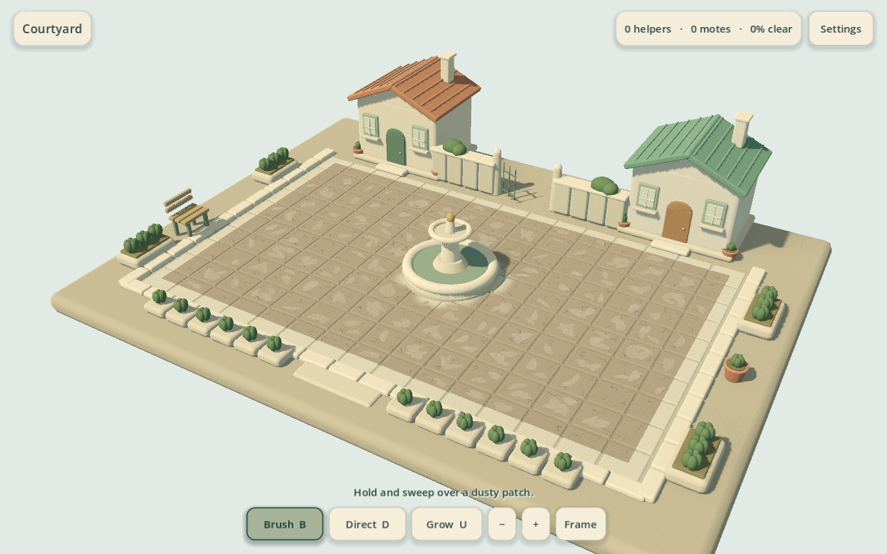
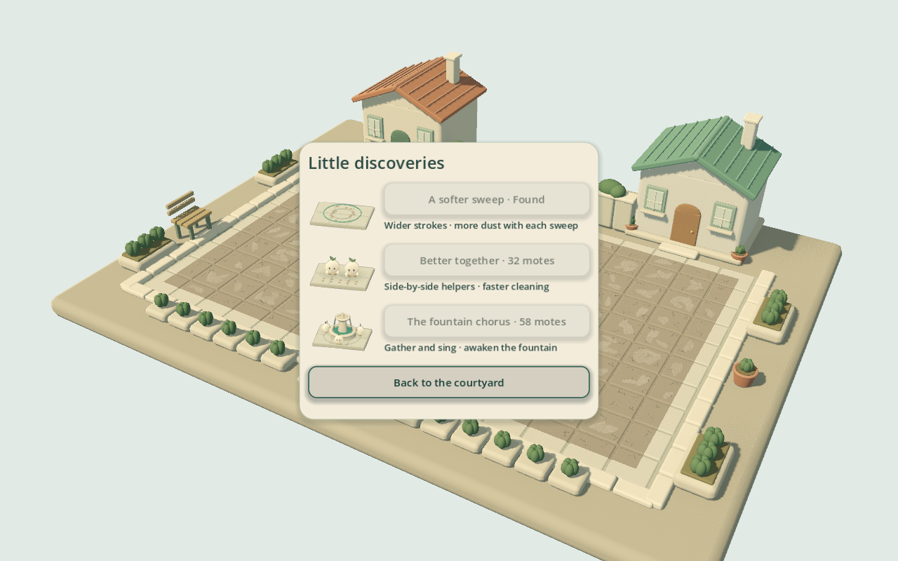
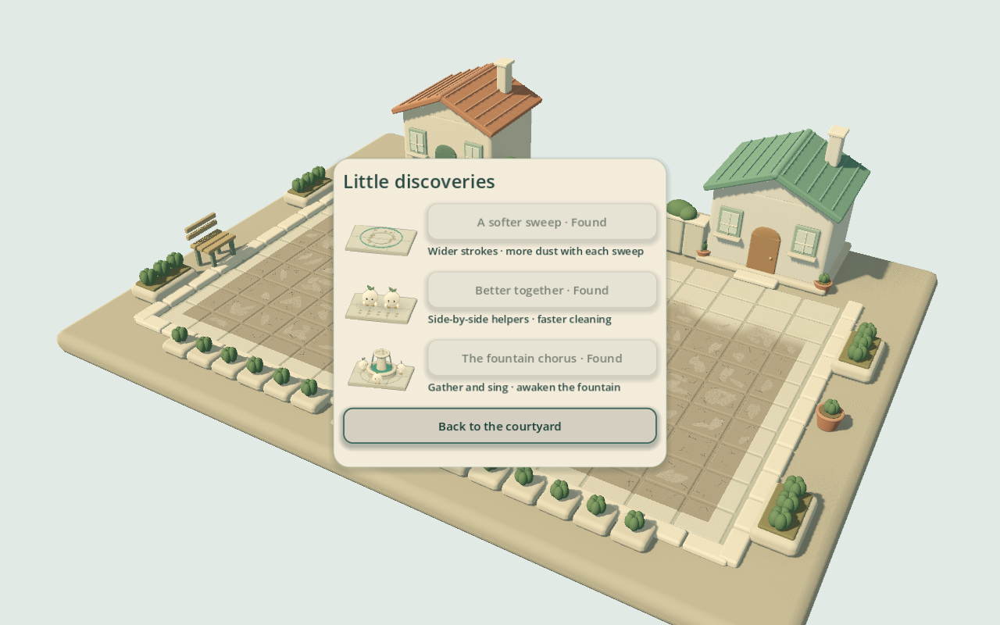
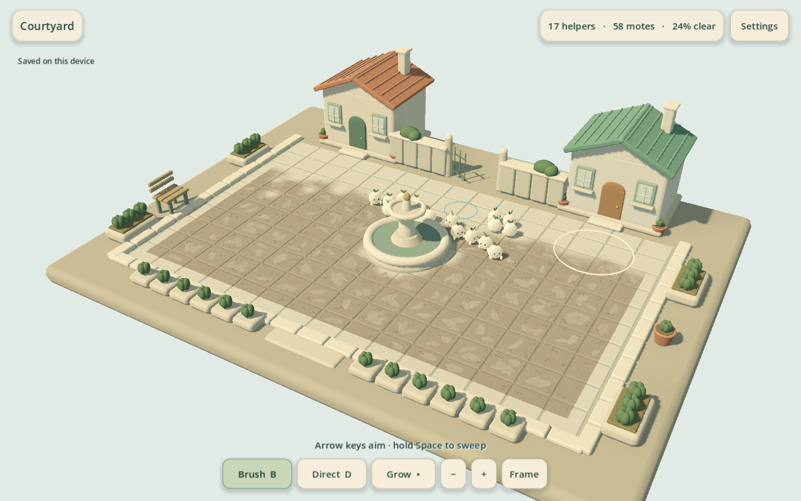
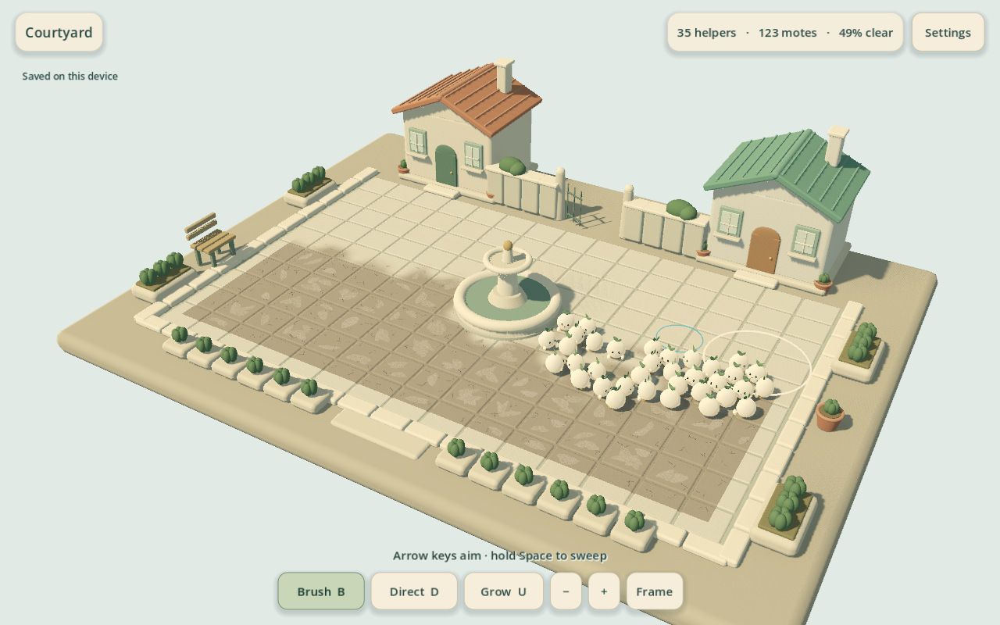
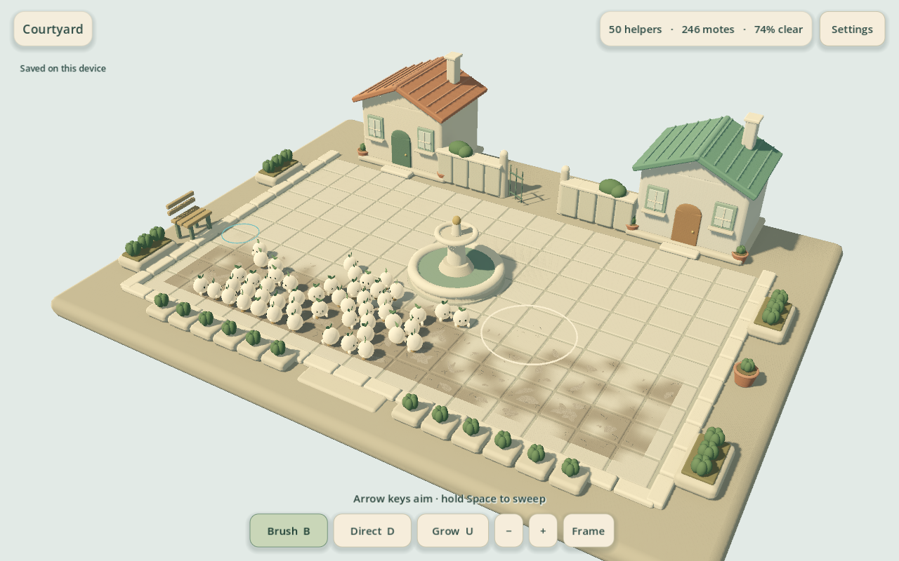
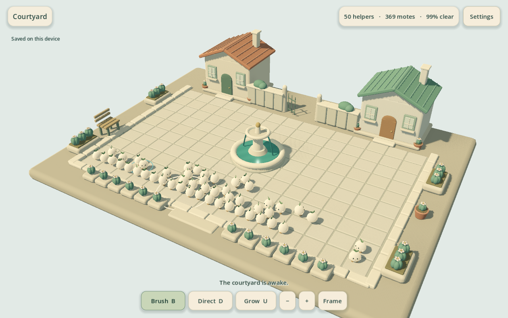

Player experience
Unfamiliar players have not yet validated understanding, comfort, appeal or voluntary continuation.
Brush an abandoned miniature courtyard, watch dust become helpers, and restore its fountain. This hub presents an unfinished development candidate and the evidence behind its next review.
0 human sessions. No current-build owner approval. No release claim. Steam Windows is the primary target; actual development testing is on Mac. iPad and iPhone remain later ports.
Unfamiliar players have not yet validated understanding, comfort, appeal or voluntary continuation.
Actual 3D captures are review evidence. Benchmark quality and satisfaction require human judgment.
The owner has not approved this exact experience, completeness or readiness to sell.
This is the tested, playable package. Live development has moved on; the corrections in progress are not included here. Its captures and checks below match this frozen package. Known defects remain; this is not a polished or accepted milestone.
Download Mac development app ZIP
Extract the ZIP and open the app. Universal2, locally verified ad-hoc signature; no notarization.
45 artifact and separate-process checks passed in the exact packaged Mac report: opening save, fresh-process return, and blocked second-copy writes. Automated input; no human participant.
Windows x64 executable
Windows game-data PCK
Keep both files together, then run the executable. Windows execution remains unverified.
2572e2f84d83f4175fac879e6735ee490fcfe47d0db02d30cecf84b28fce7919352f9ca2fd79c9deb82d5a7deffdb40e69d7d431a55ebb8d8ec501f8cb9d5484d2e9a473d3b443224bbec0ad4915b4171c8adb04These remain unfinished work. No human satisfaction or owner release approval has been recorded.
Godot MovieMaker30fps fixed engine-time with generated native InputEvents or explicitly labelled fixtures. Rendering may run faster than wall-clock; no human input.
Source matches this package. Generated native InputEvents; no progress injection. Movie mode records the engine clock; its timings are not wall-clock player measurements.
Scripted simulation timings: first helper 22.22s; restoration request 526.70s; completion 681.73s. Request to finish 155.03s includes remaining work/gathering; it is not an 18-second whole sequence. 50 helpers at the end.
Whole integrated play through generated native controls:2s brushing/5s cycle, scripted brush→teamwork→chorus purchases, periodic visible crew orders. No progress injection or accelerated simulation. Script choices are not player comprehension or human pacing.







Wall-clock native run; no movie recording.
Source matches this package. Performance fixture; no human participant.
60.012069 wall-clock seconds · 7195 frames · p95 14.797ms · p99 14.886ms · worst 20.525ms · 0 frames over 33.4ms.
Visible native Godot Metal Forward+, 1280x800 window, normal MSAA/shadows/audio,50-helper fixture. No movie or screenshots during measured interval.
These earlier 3D recordings preserve the problems that motivated changes. Compare them with the package-matched gameplay above. They are historical references, separate from the packaged candidate; the old 2D prototype is not presented as the active game.
Independent AI critique references this earlier experience. No human session or listening claim.
Historical correction capture; predates current spatial work reservations.
Dirty courtyard · Crew direction · Historical source identity
Historical camera comparison; its filename does not establish final camera acceptance.
Dirty courtyard · Crew direction · Historical source identity
All links were checked locally and their SHA-256 values are embedded in this page. Run node tools/review-3d.mjs --check to detect changed linked evidence or changed source for the selected build mode.
Observe whether unfamiliar players understand where helpers come from, direct them comfortably, recognize upgrade effects, enjoy the restoration and voluntarily continue. Ask what felt awkward, tiring, confusing or visually unpleasant. Review the actual screen size and sound, including a crowded crew.
Recruitment has not begun here: 0 incremental-game buyers, 0 cozy/cleanup players, 0 friends/developers. The initial private round targets 12–20 unfamiliar intended players, with at least 80% reaching an upgrade without coaching and at least half continuing voluntarily. Current counts are 0/0, so no rate can be calculated. These are internal decision rules, not sales predictions.
Record who reviewed which exact build, what they experienced and any disagreements. Player enthusiasm, presentation review and the owner's explicit approval remain separate gates.